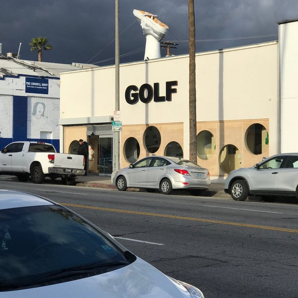

GolfWang Clothes
Golf Wang es una marca estadounidense de ropa de calle establecida en 2011 por el músico estadounidense Tyler, the Creator . El nombre Golf Wang es un Spoonerism de su colectivo musical basado en Los Ángeles, Odd Future Wolf Gang Kill Them All (OFWGKTA) o Odd Future para abreviar, del cual fue co-fundador .Golf Wang es conocido por su colorida estética visual. Desde entonces, la marca se ha expandido más allá de su afiliación con Odd Future y se ha establecido en la industria de la moda.Está co-diseñado por Tyler, the Creator y Phil Toselli. La marca ofrece ropa, calzado a través de Golf le Fleur, joyas y otros productos. "Holiday 1991", el primer lookbook de la marca, fue lanzado el 11 de diciembre de 2011.
Google maps
Nuevas colaboraciones

Lacoste
En un homenaje al tenis de la decada de los ochentas y con el sello creativo de Le Fleur; la marca de Tyler the Creator, su colaboración con Lacoste llega a Argentina con un inventario muy limitado.
Ir al carrito
Converse
Agotada en su totalidad en Estados Unidos la colección consta de 6 piezas unisex en colores pastel que van desde las iconicas zapatilals en tejido extra suave de color rosa pálido.
Ir a carrito